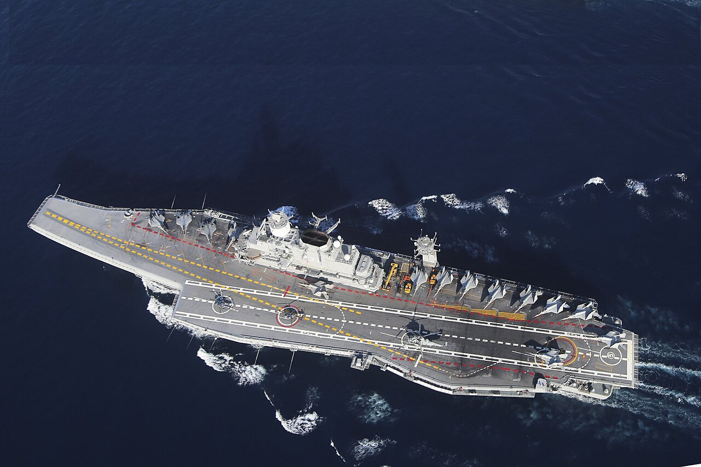

WELCOME TO INDIAN NAVY
Submarine fleet
ARIHANT:-

- INS Arihant is India’s first nuclear-powered ballistic missile submarine (SSBN), commissioned in 2016. Developed by the Indian Navy and DRDO, it serves as a critical component of India’s nuclear deterrence strategy.
- The submarine is equipped with 12 K-15 SLBMs, capable of carrying nuclear warheads and has a range of 750 km.
- It plays a vital role in India's nuclear deterrence strategy as part of the nation's nuclear triad.The submarine is equipped with K-15 ballistic missiles and can carry up to 12 of them
- The submarine has a length of about 110 meters and can operate submerged at speeds of over 18 knots.
KALVARI CLASS:-
_at_sea.jpg)
- INS Kalvari is the first submarine of the Scorpène-class attack submarines, commissioned into the Indian Navy on December 14, 2017.
- It is a conventional (diesel-electric) powered submarine with advanced stealth features. The submarine has a length of 67.5 meters and can reach speeds of 20 knots underwater.
- INS Kalvari is equipped with 6 torpedo tubes and can carry a variety of weapons, including SM-39 Exocet missiles and torpedoes.
- The submarine's design emphasizes low noise levels, making it highly stealthy in naval operations. Kalvari is a significant asset to India's defense strategy and maritime security.
SINDHUGHOSH CLASS
- The Sindhughosh-class is a class of diesel-electric attack submarines originally based on the Soviet Kilo-class design. These submarines are in service with the Indian Navy and play a vital role in India's naval defense and strategic deterrence.
- The Sindhughosh-class is based on the Soviet Kilo-class, one of the quietest submarines in the world when it was first introduced. The submarines are known for their stealth and are often referred to as "Black Hole" due to their low noise signatures, making them difficult to detect.
- Around 3,000 tons when submerged. Approximately 72 meters (236 feet). The maximum submerged speed is around 18 knots (about 33 km/h or 21 mph
- The Sindhughosh-class submarines underwent modernization as part of the Project 75 initiative by the Indian Navy, including upgrades to weapons, sensors, and systems to enhance their operational life and effectiveness in contemporary warfare scenarios.
Aircraft Carriers
INS VIKRANT
_underway_in_the_Arabian_Sea_with_4_Mig-29K_Fighter_Jet_performing_flypast.jpg)
- INS Vikramaditya is an aircraft carrier in service with the Indian Navy. It is a modified Kiev-class aircraft carrier originally built for the Soviet Navy and was commissioned into the Indian Navy on November 16, 2013.
- As an aircraft carrier, INS Vikramaditya serves as a key asset for power projection and maritime security. It plays a critical role in India's naval operations, enhancing its ability to conduct airstrikes, provide reconnaissance, and offer logistical support during naval missions.
- Length: 284 meters (932 feet).
- Displacement: Around 45,000 tons.
- Speed: Maximum speed of 30 knots (56 km/h or 35 mph).
- Air Wing: It can carry up to 30 aircraft, including MiG-29K fighters, Kamov Ka-31 helicopters, and other support aircraft.
INS Vikramaditya

- INS Vikramaditya is a modified Kiev-class aircraft carrier in service with the Indian Navy. Originally built for the Soviet Navy, it was acquired by India from Russia and commissioned on November 16, 2013.
- INS Vikramaditya is a vital asset for the Indian Navy, significantly boosting India's naval capabilities and strengthening its maritime influence.
- It serves as a power projection platform, enhancing the Indian Navy's ability to conduct airstrikes, reconnaissance, and maritime security operations.
- Can carry up to 30 aircraft, including MiG-29K fighters, Kamov Ka-31 helicopters, and other support aircraft.
Frigates
NILGIRI CLASS
- INS Nilgiri was the first ship of the Nilgiri-class of frigates in the Indian Navy, commissioned on December 30, 1972. It was a Leander-class design modified for the Indian Navy, primarily used for anti-submarine warfare (ASW) and general escort duties.
- INS Nilgiri was decommissioned in 1997, after serving for nearly 25 years. It played a significant role in the Indian Navy's early efforts to build a modern fleet, and it was the first of a series of ships to be named after the Nilgiri Hills in southern India.
- Primarily served for anti-submarine warfare, but also performed general defense and escort missions in the Indian Ocean region.
- Armed with lightweight torpedoes, anti-aircraft guns, and ASW rocket launchers.
SHIVALIK CLASS
- The Shivalik-class are a class of stealth-guided missile frigates in the Indian Navy, designed and built indigenously by Mazagon Dock Limited in collaboration with the Indian Navy. The class is named after the Shivalik mountain range in northern India.
- The Shivalik-class frigates are a significant part of India's naval modernization efforts and enhance its capabilities in regional power projection and maritime security.
- The class has been followed by the Kamorta-class (anti-submarine warfare corvettes) and the planned Next-Generation Frigate projects in the Indian Navy.
- The Shivalik-class frigates are multi-role ships, capable of anti-air, anti-surface, and anti-submarine warfare.
INS BRAHMAPUTRA

- INS Vikramaditya is an aircraft carrier of the Indian Navy, commissioned on November 16, 2013. Originally built as a Kiev-class carrier for the Soviet Navy, it was extensively refurbished and modified in Russia before being acquired by India.
- INS Vikramaditya enhances India’s maritime capabilities and serves as a crucial asset for ensuring India's dominance and influence in the Indian Ocean region.
- It plays a key role in power projection, maritime security, and air superiority for the Indian Navy, capable of conducting airstrikes and providing operational support in naval operations.
- Can carry up to 30 aircraft, including MiG-29K fighter jets, Kamov Ka-31 helicopters, and other support aircraft.
INDIAN NAVY BUDGET
- In the fiscal year 2025-26, the Indian Navy received a record budget allocation of ₹97,149.80 crore.This substantial funding represents a significant increase from the previous year's allocation of ₹91,572.53 crore, accounting for approximately 19.76% of India's total defense budget
- The overall defense budget for 2025-26 is ₹6.81 lakh crore (approximately $78.8 billion), reflecting a 9.5% rise from the previous fiscal year. However, a substantial portion of this budget is allocated to manpower costs, including salaries and pensions, which consume about ₹4.7 lakh crore
- The overall defense budget for 2025-26 is ₹6.81 lakh crore (approximately $78.8 billion), reflecting a 9.5% rise from the previous fiscal year. However, a substantial portion of this budget is allocated to manpower costs, including salaries and pensions, which consume about ₹4.7 lakh crore.
- To bolster indigenous defense production, the government has also allocated ₹1,500 crore for the procurement of domestically produced weapons and equipment for the Navy. This move aligns with India's broader strategy to reduce reliance on foreign arms imports and promote self-reliance in defense ms of specific allocations
- the Indian Navy has been earmarked ₹24,390 crore for the procurement of new ships and submarines. This investment underscores the government's commitment to enhancing the naval forces' capabilities amid evolving maritime security.